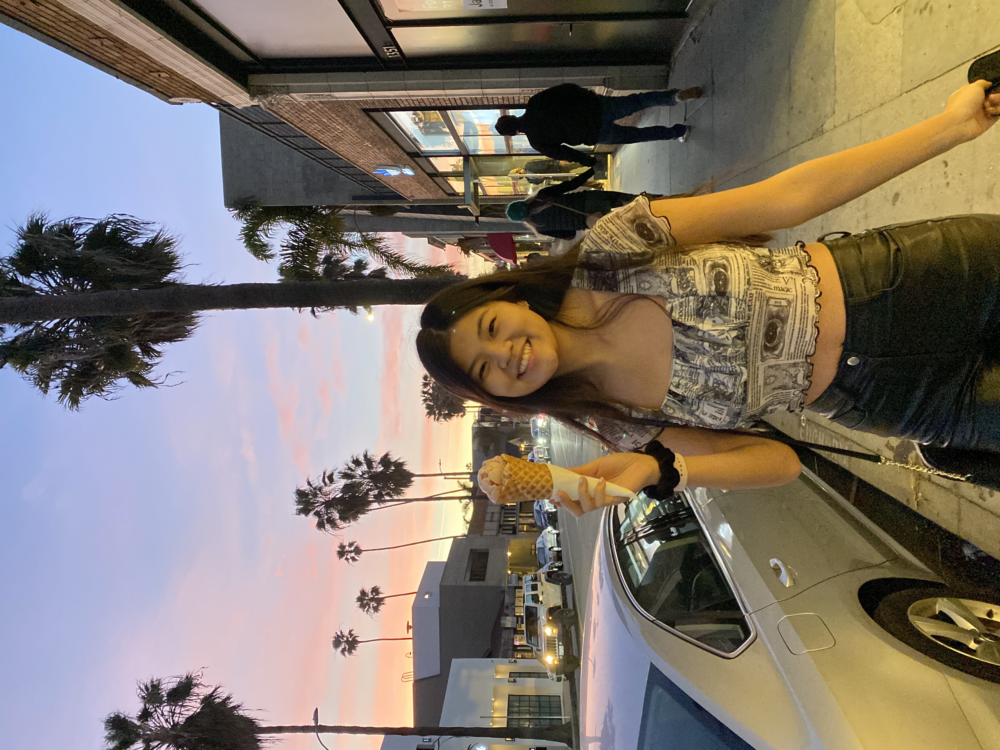

About the Mapmaker
My name is Penelope. I often go by my middle name Lillan, but never Lillian . I'm a third year at UCLA studying Electrical Engineering and I am from
- Jiangxi, China
- Roseville, CA
- Seattle, WA
- Scottsdale, AZ
- Mission Viejo, CA
- Los Angeles, CA
So far at UCLA my coursework has been theory-focused, so I'm excited to change it up with this class. My goal as a critical digital mapmaker is to learn how to use GIS to combat systematic symbolic annihilation.
You can find out more about me by visiting these websites: